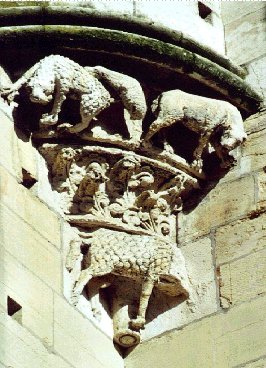
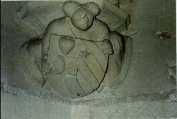
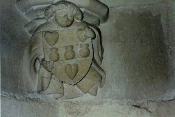
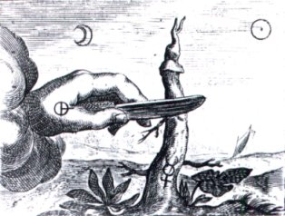

Emblema XXIV.
revu le 7 mai 2002
Regem lupus voravit & vitae crematus reddidit.
(Le loup a dévoré le roi, et, consumé, il l’a rendu à la vie1.)

Efforce-toi de capturer le loup vorace2.
Pour l’apaiser, à ce glouton jette le corps
Du roi3 ; puis place-le sur un bûcher ; le feu
Excité par Vulcain le réduira en cendres.
Opère ainsi souvent et tu verras le roi,
Doté d’un cœur de lion, surgir, fier, de la mort4.
Tout le monde connaît l’appétit et la voracité du loup. Lorsqu’en effet les aliments viennent à lui faire défaut, il mange de la terre, au degré extrême de sa faim5. On dit aussi qu’il remplit son ventre de la même manière lorsqu’il doit attaquer des troupeaux nombreux, afin que, rendu plus pesant par cette sorte de fardeau, il soit moins facilement repoussé et oppose une plus forte résistance. Lorsqu’il a pénétré dans les étables, il ne se contente pas de tuer ce qui suffirait à son ventre, mais il étrangle ici et là, au hasard, toutes les bêtes des troupeaux dans son extrême avidité. Il est consacré à Apollon et aussi à Latone parce qu’il l’a assistée quand elle enfantait : car Latone n’aurait pas pu enfanter sans la présence du loup6. C’est donc à juste titre que le loup est réputé agréable à Apollon dont il a célébré la naissance. C’est aussi parce que ses yeux luisent la nuit et lancent des traits de lumière.
On jette à ce loup tenaillé par une horrible faim le corps du roi inanimé, non pour qu’il le dévore entièrement et le réduise à néant, mais pour que, par sa propre mort, il lui restitue la vie et les forces7. Il y a en effet dans la queue du loup je ne sais quelle puissance d’amour que l’on infuse au roi à demi-mort, qui devient par là très agréable aux yeux de tous les hommes, retrouvant sa santé et sa beauté antérieures. Les Hyrcaniens8 ne nourrissaient pas les chiens en vue d’un autre usage et ils leur donnaient à dévorer ceux dont la vie était achevée, comme le rapporte Cicéron. Ainsi les Massagètes livrent en proie aux chiens ceux qui sont morts de maladie. Les philosophes, eux, jettent leur roi au loup. Ils n’ont pas adopté l’usage des Sabéens de traiter les corps des défunts comme des ordures, ni celui des Troglodytes qui liaient le crâne du mort à ses pieds, le jetaient dehors et le confiaient à la terre, sans considération de lieu. Mais les philosophes ont préféré se conformer ici à la coutume des Mages qui n’inhumaient pas les cadavres des leurs sans qu’ils eussent été préalablement déchirés par les bêtes féroces. Ils ont également suivi l’habitude des Indiens qui se faisaient brûler vifs, ornés de couronnes et chantant les louanges des dieux, pour ne pas être surpris par la vieillesse. Mais le destin final de l’homme imposait cette coutume à tous ces peuples sans espoir de résurrection, sans renouvellement de la vie. Les philosophes ont adopté cet usage dans un sentiment bien différent : ils savent en effet d’une façon très certaine qu’une fois le roi mort, dévoré par le loup, il réapparaîtra vivant, jeune et robuste, et que le loup sera brûlé à sa place dans le feu9. Car tuer le loup est chose aisée quand il s’est alourdi le ventre de la sorte, et le roi bien que mort possède la vigueur de Mars ou de Cycnus10 : on ne peut ni le blesser ni le faire disparaître.
Mais où faire la chasse à ce loup, et où prendre le roi ? Les philosophes répondent que le loup erre ça et là dans les montagnes cherchant à saisir une proie ; il faudra, selon eux, le faire sortir de sa caverne et le garder pour cet usage11. Le roi, venant de l’Orient, finit par succomber, accablé par la fatigue d’un long voyage. En outre le chagrin hâte sa mort, car les étrangers ne lui rendent aucun honneur et ne lui manifestent que peu d’estime, si bien qu’il est vendu comme esclave pour quelques pièces d’or. Il faut prendre un loup provenant d’un pays froid. Les loups sont plus cruels lorsqu’ils naissent dans des régions froides, par comparaison à ceux d’Afrique ou d’Egypte : le froid extérieur provoque en effet chez eux une faim plus grande. Le roi ainsi dévoré renaît avec un cœur de lion et peut alors dompter toutes les bêtes sauvages12. Et, bien qu’au milieu de ses six frères il soit le plus vil d’aspect, parce que le plus jeune de tous, il n’en parviendra pas moins au terme de bien des épreuves et des tribulations au plus puissant des règnes. C’est pourquoi Gratien dit dans le Rosaire :
" Il est en alchimie un certain corps noble que l’on fait passer d’un maître à un autre maître. Il y a, en son commencement, misère et vinaigre, mais, en son terme, joie et allégresse. "
Et Alain, au même endroit :
" Entre toutes choses, il faut en choisir une, de couleur livide, qui a une apparence métallique, limpide et liquide ; c’est une chose humide et chaude, aqueuse et brûlante, c’est une huile vivante et une teinture vive, une pierre minérale et une eau de vie d’une efficacité admirable.13"
Les rois ne sont pas toujours en sûreté lorsqu’ils voyagent hors des frontières de leur royaume. Quand ils sont reconnus, s’ils veulent se cacher, ils sont tenus pour des traîtres par leurs ennemis qui les mettent en prison ; s’ils s’avancent à découvert sans armée, ils sont traités de la même fâcheuse manière. Ce roi Indien a connu semblable sort, ou il l’aurait connu s’il n’était mort auparavant. C’est en cela que consiste la première opération de lavage, de sublimation, d’ennoblissement, que les philosophes pratiquent pour que la seconde et la troisième se réalisent d’une façon plus heureuse14. Car sans la première, les autres ne seront d’aucune utilité, le roi étant encore timide, somnolent et malade. Il lui faut en effet exiger d’abord de ses sujets l’impôt et le tribut pour pouvoir se procurer les vêtements et les autres biens nécessaires, après quoi il sera assez riche pour fournir à son peuple des habits neufs chaque fois qu’il le voudra. Les grandes choses, nées la plupart du temps de petits commencements, peuvent ensuite soulever ce qui est petit ou même supprimer ce qui est grand, si elles le veulent. Un exemple en est fourni par les grandes villes qui, petites à l’origine, commandèrent plus tard à des grands rois et transformèrent des bourgades en cités vastes et populeuses.
Notes1. Voila un chapitre qui a été la cause de nombreuses confusions parmi les alchimistes. D'ailleurs Michel Maier n'en est pas responsable, puisque bien avant lui, Artephius et, surtout, Basile Valentin [1, 2, 3, 4] avaient bien brouillé les cartes avec cette histoire de loup et d'antimoine.

FIGURE I
(Notre-Dame, Dijon : les loups guettent l'agneau - cliché Alain Mauranne)2. Le loup, voila encore une énigme désespérante. Voyons si Pernety nous sera de quelque aide :
Le Loup ayant beaucoup de ressemblance avec le Chien, & n’étant, pour ainsi dire, qu’un Chien sauvage, il n’est pas surprenant qu’il ait participé aux mêmes honneurs que le Chien. Il avait aussi quelque rapport avec Osiris, puisque les Egyptiens pensaient qu’Osiris avait pris la forme de Loup pour venir au secours d’Isis & d’Horus contre Typhon. Cette fable paraît ridicule à un homme qui n’y cherche que l’histoire ; mais elle ne l’est nullement dans le sens Philosophique, puisque les Philosophes Hermétiques cachent, sous le nom de Loup, leur matière perfectionnée à un certain degré. Basile Valentin (12 Clefs, Clef I.) dit qu’il faut prendre un Loup ravissant & affamé qui court dans le désert, en cherchant toujours de quoi dévorer. Celui qui fera attention à ce que nous avons dit dans le chapitre d’Osiris, & du combat d’Isis contre Typhon, verra aisément l’analogie qui se trouve entre Osiris & le Loup dans certaines circonstances de l’œuvre ; & pourquoi les Egyptiens débitaient cette fiction. Il suffit, pour remettre sur les voies, de faire observer que le Loup était consacré à Apollon ; ce qui le fit nommer Apollo Lycius. La Fable disait aussi, selon le rapport de quelques Auteurs, que Latone, pour éviter les poursuites & les effets de la jalousie de Junon, s’était cachée sous la forme d’une Louve, & avait, sous cette forme, mis Apollon au monde. On sait qu’Osiris & Horus étaient des hiéroglyphes d’Apollon ; ce qui doit s’entendre du Soleil ou or Philosophique. « Notre Loup, dit Rhasis (Epître.), se trouve en Orient, & notre Chien en Occident. Ils se mordent l’un & l’autre, deviennent enragés, & se tuent. De leur corruption se forme un poison, qui dans la suite se change en thériaque. » L’Auteur anonyme des Rimes Allemandes dit aussi : « Le Philosophe Alexandre nous apprend qu’un Loup & un Chien ont été élevés dans cette argile, & qu’ils ont tous deux la même origine.» Cette origine est marquée dans la fiction de l’expédition d’Osiris, où l’on dit que ce Prince s’y fit accompagner de ses deux fils, Anubis sous la forme de Chien, & Macedon sous celle de Loup. Ces deux animaux ne représentent donc hiéroglyphiquement que deux choses prises d’un même sujet, ou d’une même substance, dont l’une est plus traitable, l’autre plus féroce. Isis, suivant l’inscription de sa colonne, dit elle-même, qu’elle est ce Chien brillant parmi les Astres que nous appelons la Canicule.Il est bien difficile de retirer des informations positives de ce texte. D'Orient, nous savons que les pierres gemmes venaient tout d'abord. Mais il ne s'agit pas de cela. Nous savons aussi que les Mages furent attirés par une étoile située à l'Orient, qui leur indiqua où ils trouveraient le Christ. Et la tradition veut que celui-ci soit né dans une étable...De l'Orient aussi, on a longtemps importé certains sels comme le nitre ou le borax. Nous savons encore que le Lion doit être aussi trouvé à l'Orient. Par ailleurs, on divise ordinairement le Zodiaque en douze parties égales qu'on appelle Signes, dont la suite se compte d'Occident en Orient, en commençant par le point où le Soleil avançant de son mouvement propre, passe de la partie méridionale du globe à la partie septentrionale [cf. zodiaque alchimique]. C'est le premier degré du premier signe du printemps appelle Aries ou le Bélier. De nombreux auteurs ont en conclu que, le Soleil étant exalté dans le Bélier, c'est là qu'il fallait chercher la matière propre à la dépuration de l'OR. Newton lui-même a versé dans l'erreur et a pensé trouver dans la stibine le LOUP de la tradition hermétique, parce que, rappelons-le, l'antimoine enlève de leurs dissolutions métalliques, seulement l'or et l'argent, sous forme dépurée. Si nous prenons à présent les entrées de Pernety, dans son Dictionnaire, nous avons :Loup. cet animal était consacré à Apollon, et était en grande vénération chez les Égyptiens Voyez pourquoi, dans le liv. 1, ch. 8 des Fables Egypt. et Grecq. dévoilées.Mais le loup, c'est aussi le grappin, l'agent qui permet d'éviter la volatilisation trop précoce du Mercure. Dans ce chapitre, Maier n'a pas en vue ce second sens et symbolise manifestement le Mercure par le Loup.
Loup. Quelques Chymistes ont donné ce nom à l’antimoine ; mais il doit s’entendre du mercure des Sages. Prends un Loup affamé et ravissant, sujet, à cause de l’étymologie de son nom, au guerrier Mars; mais de race tenant de Saturne, comme étant son fils. Basile Valentin. Le mercure est dit petit-fils de Saturne.
LOUP GRIS. Antimoine.
3. C'est-à-dire qu'il faut jeter dans le Mercure les chaux métalliques sous forme de poudres, déjà préparées.
4. La résurrection du roi correspond à la réincrudationdes Soufres.
5. Cette phrase est encore à mettre au rang de celles dans lesquelles les alchimistes ont le secret de tout dire en ayant l'air de ne réciter des banalités. Ici, le lecteur l'aura deviné, le mot TERRE est capital. D'abord, parce que c'est effectivement une sorte de TERRE en poudre très fine qu'il faut infuser au Mercure, ou plutôt, vu que ce Mercure est d'abord une « eau sèche qui ne mouille point les mains », c'est au moins trois substances poudreuses qu'il faut mêler dans le creuset. En second lieu, le NOIR est la couleur qui caractérise la TERRE. Ce qui fait dire aux Adeptes que si l'on ne voit pas la couleur noire au début du travail, le reste est vain.
6. Il s'agit du loup considéré comme le Mercure.
7. Allégorie classique : le travail de minéralisation exercé par le fondant [le Mercure] ira de pair, par la voie sèche, avec sa progressive disparition.
8. Peuple de la Caspienne, non loin du Pont.
9. C'est résumer là toute la doctrine de l'oeuvre. Exposons donc quels sont les principaux phénomènes qui agissent lors de la Grande Coction : On trouve rarement
les métaux à l'état natif ; on est convenu de donner le nom de minéralisateurs aux corps auxquels ils sont unis dans les minerais. Ainsi les métaux peuvent être minéralisés par les acides. Les métaux sont alors à l'état de sels dont ils sont pour l'ordinaire la base salifiable, car il y a des métaux tels que le chrome, le molybdène, le tunsgtène et l'arsenic, qui sont eux-mêmes convertis en acides, et forment des sels en minéralisant des oxydes métalliques. Les principes qui sont le plus ordinairement principes minéralisateurs sont, outre les suivants, les acides borique, hydro-chlorique, carbonique, nitrique, fluorique, phosphorique,
hydro-sulfurique, sulfurique, etc. Ceux qui nous intéressent au premier chef sont les acides nitrique, sulfurique, chlorhydrique, phosphorique et fluorique. Les oxydes servent de minéralisateurs les uns aux autres. Ainsi la chaux constitue les pierres calcaires ; la magnésie, les pierres magnésiennes , etc. Mais il en est deux surtout qui doivent plus particulièrement fixer notre attention : ce sont l'alumine et la silice. L'alumine constitue les terres argileuses et une classe de minéraux avec lesquels elle forme une espèce de combinaison saline dans laquelle elle parait agir comme acide ; ce sont ces corps que M. Julia-Fontenelle a nommés aluminoxides, et parmi lesquels on trouve une foule de pierres précieuses, telles que le corindon, le saphir, le chrysoberil, le rubis spinelle, etc. [cf. fleurs minérales] La silice, qui constitue les grès, les silex et les cristaux de roche, et qui s'unit avec les oxydes en jouant également le rôle d'acide et formant des silicates, parmi lesquels on compte la cérite, l'émeraudine, la gadolinite, l'écume de mer, la pimelite, les serpentines, la stéatite, le talc, l'amphibole, la trémolite, l'amiante, l'œil de poisson, etc.
La silice et l'alumine se trouvent également ensemble et constituent une classe de pierres particulières, parmi lesquelles on distingue les diverses argiles, l'analcine, l'axinite, la chabasie, l'émeraude, l'épidote, l'euclase, le feldspath, le grenat, l'héliotrope, le lapis-lazuli, le mica, la tourmaline, etc. Comme agent minéralisateur, il faudrait encore citer l'oxygène. L'oxygène est susceptible de s'unir à tous les métaux, et de les convertir ainsi en oxydes métalliques, qu'on appelait jadis rouille ou chaux métalliques et que l'on supposait être des métaux qui avaient perdu leur phlogistique. L'illustre Lavoisier démontra cette erreur. Il faudrait enfin citer le fluor ou phtore, le phosphore, le soufre sous la forme de sulfates, etc.


FIGURE II
(Palais Jacques-Coeur, Bourges - intérieur - clichés Alain Mauranne)Comme on peut voir, ce n'est pas moins de deux blasons qu'il faut, pour décrire les sels idoines à l'oeuvre. A droite, on aura reconnu le salpêtre avec les réitérations qu'il faut effectuer pour sa dépuration ; à gauche, le sel d'Ammon, reconnaissable à l'étoile ; l'eau benoîte qu'on distingue sur un fragment de mérelle. Les coeurs représentent nos chaux métalliques.
Livrons nous maintenant à une expérience par la voie humide. Considérons, par exemple, de l'oxyde de fer amorphe enfermé, dans un tube clos, chauffé au rouge vif, et contenant une atmosphère inerte chargée d'acide chorhydrique. A basse température, l'acide et l'oxyde n'exercent aucune action l'un sur l'autre, mais si l'on chauffe jusqu'au point où commence la dissociation de l'acide chorhydrique, l'hydrogène mis en liberté réduit une partie de l'oxyde, et donne du fer métallique auquel le chlore se combine ; il se forme un mélange gazeux d'eau et de chlorure de fer, et l'on constate que plus la température s'élève, plus la formation de ces deux composés devient facile et prompte. Si elle s'abaisse, le mélange de chlorure de fer et de vapeur d'eau donne lieu à une réaction inverse, de laquelle résultent de l'oxyde de fer cristallisé et de l'acide chlorhydrique.
Si donc on introduit une masse considérable d'un oxyde amorphe, tel que le
sesquioxyde de fer, et une trace d'acide chlorhydrique gazeux dans le tube,
comme celui-ci ne possède pas en tous ses points la même température, si petite
du reste que l'on suppose les différences, il arrive que, dans un espace très petit
qui possède la température maximum de l'appareil, il s'établit, pendant un temps
très court, un équilibre entre les tensions de dissociation de l'acide chlorhydrique,
de l'eau et de l'oxyde, équilibre duquel résultera la formation d'un mélange d'eau et de chlorure en vapeur; mais ce mélange sera bientôt transporté en des points voisins où la température est ptus faible, et alors il se formera de l'acide chlorhydrique et un dépôt d'oxyde cristallisé. Pendant ce temps, dans les parties
les plus chaudes la formation du chlorure et de l'eau sera prédominante, et la
matière qui se trouve en ces points donnera quelques instants après, par un refroidissement relatif, un nouveau dépôt d'oxyde cristallisé ; celui-ci subira donc
une volatilisation apparente, et la totalité de la matière amorphe finira par être
transportée et minéralisée, c'est-à-dire transformée en cristaux analogues aux
cristaux naturels. Le mouvement de la masse gazeuse, qui est la conséquence de l'inégalité de température aux différents points du tube, détermine le premier dépôt de cristaux, et comme la transformation du chlorure en oxyde provoque de continuels changements de densité dans l'atmosphère où se fait la réaction, il en résulte qu'une très petite quantité d'acide chlorhydrique agit avec une vitesse très
grande, et produit le transport et la cristallisation d'une masse considérable de
substance amorphe. Il est facile de se rendre compte du double fait que l'oxyde amorphe se transforme entièrement en cristaux, et que ceux-ci tendent sans cesse à s'accroître, si la température n'est pas absolument invariable. D'abord, l'oxyde amorphe est toujours attaqué le premier par l'acide chlorhydrique, car la cristallisation s'effectue ordinairement avec accroissement de densité et perte d'une certaine quantité de chaleur. Or, l'oxyde amorphe attaqué par l'acide chlorhydrique devant donner lieu à un phénomène calorifique plus intense que la réaction de ce même acide sur l'oxyde cristallisé, c'est lui qui sera dissous le premier, en vertu du principe du travail maximum ; il le sera exclusivement si la chaleur est convenablement ménagée. jours sur les cristaux déjà formés et non sur les parois des vases, que se forme le nouveau dépôt ; le cristal formé s'accroît dans ces circonstances, comme il le fait au sein d'une liqueur sursaturée. Ainsi tout l'oxyde amorphe cristallisera, et les cristaux croîtront en grossissant de plus en plus, tant qu'on prolongera l'expérience. M. H. Sainte-Claire Deville a fait cristalliser ainsi les oxydes de fer, de manganèse, de zinc, les acides stannique, niobique, etc.; il a pu reproduire un grand nombre de minéraux, tels que le fer oligiste, la martite, la cassitérite, la niobite, le rutile, etc.
Des agents minéralisateurs — L'acide chlorhydrique n'est pas le seul corps qui possède la propriété minéralisatrice, et M. Hautefeuille l'a trouvée aussi dans l'acide fluorhydrique. D'une manière générale, les expériences de cette nature réussiront, quand les substances mises en présence seront capables de donner, dans certaines conditions de température, des combinaisons qu'un échauffement ou un refroidissement détruira, it faut en outre que dans l'atmosphère qui enveloppe les mélanges à minéraliser, il puisse se former deux réactions contraires, telles que : attaque d'un oxyde par un acide, d'où résulte de l'eau et un sel volatil, puis décomposition de ce sel par l'eau, avec régénération de l'oxyde cristallisé et de l'acide primitif ; les deux effets inverses se produisent dans un sens ou dans l'autre, suivant que la température s'élève ou s'abaisse. Un agent minéralisateur ne peut donc agir que si, à une température déterminée, il est capable de se combiner directement avec les éléments de la substance à minéraliser, et si les produits de cette combinaison peuvent, à une autre température, être à leur tour décomposés par l'eau. Ainsi l'acide chlorhydrique ne peut pas faire cristalliser la silice, pas plus que le chlorure de silicium ne donne de cristaux au contact de l'eau, même à température élevée ; c'est pourquoi aucun silicate ne peut être minéralisé par l'acide chlorhydrique. L'alumine se comportera de la même manière avec cet acide, mais comme elle est attaquée par l'acide fluorhydrique en donnant du fluorure d'aluminium que l'eau décompose, celui-ci pourra la minéraliser ; M. Hautefeuille a vérifié par l'expérience les conclusions auxquelles la théorie conduisait.
Quant a la silice, elle ne peut pas plus être minéralisée par l'acide fluorhydrique que par l'acide chlorhydrique ; comme déjà à 150 degrés le fluorure de silicium n'est plus décomposé par l'eau, ce n'est qu'au-dessous de cette température que la minéralisation pourrait se faire, mais on n'obtient dans ces conditions que de la silice gélatineuse.Comme on peut le voir, ce n'est pas par de telles expériences que l'on pourra obtenir des pierres gemmes. Néanmoins, de tels essais sont riches d'enseignement au plan de la doctrine hermétique. On voit une TERRE saisi par un AIR particulier, aidé en cela par le FEU. Puis, on voit que cette TERRE est volatilisée par sa combinaison labile avec un des principes de l'AIR qui se situe dans le vase clos. Plus : cette TERRE réapparaît sous une forme réincrudée et alors qu'elle ressemblait d'abord à un chaos, la voici parée de la première couronne. D'amorphe, elle est devenue cristallisée. Mais il y a encore plus : la première cristallisation sert pour ainsi dire de germe, de levain pourrait-on même ajouter, en sorte qu'elle constitue un point à partir duquel le cristal va progresser, va croître et littéralement, se multiplier. Il est hors de doute que cette expérience, qui semble-t-il n'est valable que pour les métaux vils, n'en respecte pas moins les préceptes que dicte Hermès Trismégiste dans sa Table d'Emeraude. Rappelons cet extrait :
« Il monte de la terre et descend du ciel, et reçoit la force des choses supérieures et des choses inférieures. »
Evidemment, on nous dira que nous avons forcé le sujet, que nous l'avons adapté à nos réflexions improbables, et qu'Hermès et que surtout, les alchimistes, n'ont jamais pu avoir la clef de telles réactions chimiques. Certes. Nous en convenons volontiers. Mais nous devions signaler cette coïncidence remarquable entre des préceptes purement traditionnels et des faits tout à fait scientifiques. Les uns ne contredisent pas les autres ; ils sont évidemment situés à des époques très différentes, mais l'idée d'ensemble est respectée et permet de donner un point d'appui solide à l'allégorie de la sublimation qui constitue le fonds de pensée de l'Idée Alchimique.
10. Sur Cycnus, voyez : 1, 2, 3-
11. C'est-à-dire l'extraire de sa minière. Plusieurs candidats se présentent : alun, gypse, spath fluor, gangues métalliques, en particulier celle de l'antimoine [sulfate de baryte], voyez 1, 2, 3, 4, 5, 6, 7, 8, 9, 10, 11, 12,. Cette extraction de la matière première est visible sur l'une des planches de la Suite du Cabinet des Minéraux, ou le Soleil Doré des philosophes
FIGURE III
(le Soleil Doré des Philosophes, Goossen Van Vreeswijk : extraction de la prima materia)C'est à la recherche du nitre vitriolé - comme l'indique le symbole sur la main - que l'Artiste doit s'appliquer d'abord. C'est alors seulement qu'il recherchera les matières voilées par les idéogrammes des luminaires. On reparle de ce Nitre en note 14.
12. C'est le Lion rouge. Nous sommes alors au régime de Mars.
13. la couleur livide annonce le soufre. L'apparence métallique est celle des vitriols. L'huile vivante indique que la matière première porte en elle le Soufre rouge, dès le sortir de la mine.
14. C'est là une des allégories parmi les plus mystérieuses de l'alchimie : les trois purifications. Faut-il y voir la purification du nitre, c'est-à-dire le salpêtre de 3ème cuite ? C'est une possibilité, d'autant plus qu'il y ait question « d'eaux faibles » et « d'eaux fortes », avec un jeu de mots sur l'aqua sicca. Voici un extrait du Cours de Chimie de Nicolas Lefèvre [TOME QUATRIEME, A PARIS, Chez JEAN-NOËL LELOUP, Quay des Augustins, à la descente du Pont Saint Michel, à Saint Jean Chrysostome.
M. DCC. L I]: Le nitre est un sel admirable d’une nature sulfureuse, c’est-à-dire, composé d’un soufre extrêmement volatil, à raison de quoi le nitre est si inflammable. II prend son origine dans une terre grasse, d’où on le tire en forme de lessive ; cette terre ou matière grasse, lui sert de matrice qui est humectée par les urines & les gros excréments des animaux, dont le sel volatil urineux imprégné de beaucoup de soufre combat successivement avec le sel acide de la terre ou le central, ce qui les altère & change tellement l’un & l’autre, que les deux en font un troisième qu’on appelle nitre.
On peut faire du nitre avec toute sorte de terre, en la ramassant en un monceau : qui ne soit ni à l’air, ni à la pluie, qu’on aura soin d’imbiber de l’urine d’homme on de quelque animal ; car en faisant une lessive de cette terre & évaporant l’humidité, il se formera un véritable nitre, il s’en forme pareillement contre les pierres & les vieilles murailles, parce que le sel de la chaux vive, dont les murailles sont enduites se dissout & s’altère successivement par le sel acide ou central qui exhale de la terre : & comme le sel de la chaux vive tient de l’alcali, le sel acide de la terre se joint facilement à lui & tous les deux unis ensemble font le sel nitre. Ceci fait voir comme Beccherus prépare du nitre avec des vers de terre, & Glauber avec des végétaux, par le moyen d’un certain fourneau qu’on peut voir chez cet Auteur. Le nitre est donc un sel salé, composé de l’acide du soufre, & d’un sel alcali joints ensemble, ceci se démontre, parce que si on prend quelque sel fixe ou alcalisé avec des charbons, pour le joindre à quelque esprit acide, on aura un nitre parfait : comme aussi si on verse de l’esprit de nitre sur du sel de tartre, le soufre dont le nitre est composé est fort volatil, ce qui fait qu’il enlevé l’acide, & qu’il est inflammable.
On ne se sert jamais du nitre en Médecine ni en Chimie, qu’il n’ait été auparavant dépuré, ou, comme parlent les raffineurs de nitre, qu’il n’ait été purifié de son sel hétérogène, c’est-à-dire, du sel commun, qui se trouve mêlé avec les urines & les excréments des animaux, & qui est entré dans la composition du nitre durant fa génération, ainsi il se trouve seulement dans le nitre qu’on tire des latrines, où les hommes déchargent leur ventre, & non ailleurs. La raison de ceci est, que le sel commun dont nous usons avec nos aliments est inaltérable dans notre corps, & qu’on le rend de la même manière qu’on l’a pris. Une preuve pour connaître si le nitre contient beaucoup de sel hétérogène, c’est de le mettre sur des charbons allumés, s’il est pur il s’enflamme d’abord, & il ne reste rien, mais s’il n’est pas pur, il demeure un sel blanc & caustique, qu’il faut séparer du nitre avant que de mettre celui-ci en usage.
Parmi tous les sels, il n’en est point de pareil au nitre cru pour là Médecine. Le nitre dépuré convient aux fièvres ardentes, bénignes & malignes. La dose du simple est d’un scrupule, & du nitre antimonié, de demi scrupule : on peut fort bien mettre demi once ou six dragmes de nitre dépuré dans la boisson ordinaire, dans les fièvres continues, & dans les effervescences de la masse du sang, & contre la soif, de quelque cause qu’elle vienne, même des hydropiques, d’autant que le nitre est un excellent diurétique. Il est pareillement souverain pour arrêter le satyriasis : & à en prendre souvent on pourrait devenir totalement impuissant. C’est un remède éprouvé que le nitre, contre toutes forces d’hémorragies, surtout par anastomose, soit qu’on en donne intérieurement ou extérieurement, il est pourtant à remarquer, qu’il relâche & affaiblit l’économie & les fondions de l’estomac & des intestins.
Dépuration du nitre. Sel de prunelle. Nitre fixé par les charbons.
On dépure ordinairement le nitre avec le soufre, & on le nomme ainsi dépuré sel de prunelle. Voyez le Chapitre du sel polycreste de Glaser. Si on ajoute des charbons au nitre, on aura un alcali fixe parfait après la déflagration, parce qu’il n’aura pas pu se remplir du soufre des charbons. La meilleure de toutes les dépurations du nitre, est celle qui se fait par les alcalis fixes. On prépare une lessive très forte de sel de tartre & de chaux vive, ou de cendres gravelées, on y jette du nitre, & l’alcali fixe prend tout l’acide vicié, & tout ce qu’il y a de corrosif & d’excrémenteux ; & après avoir un peu consumé ou évaporé de l’humidité, le nitre se prend en cristaux très dépurés.
Esprit de nitre.
L’esprit de nitre se distille par une retorte, en y ajoutant du bol commun, ou de l’argile calcinée, pour l’empêcher de fondre. Plus on met de bol & d’argile, plus on tire d’esprit, par exemple, si on met dix ou douze parties de bol sur une de nitre, presque tout le nitre s’en ira en esprit ; & si on n’y met qu’une troisième partie on tirera peu d’esprit mais il restera beaucoup de sel fixe dans la tête morte, cet esprit étant remêlé avec le sel de tartre, donne un nitre parfait.